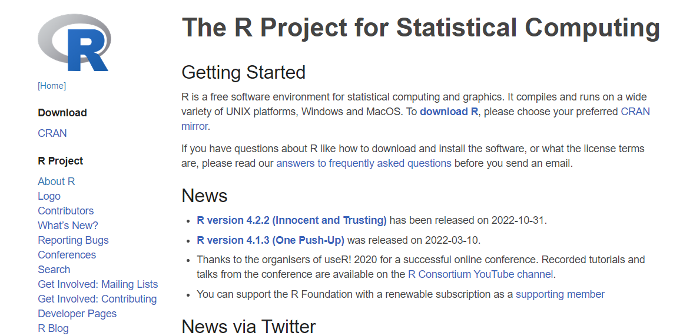
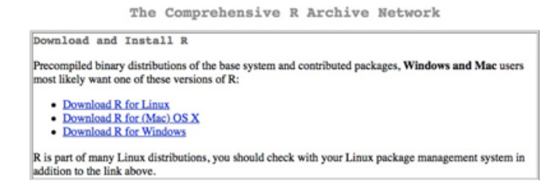
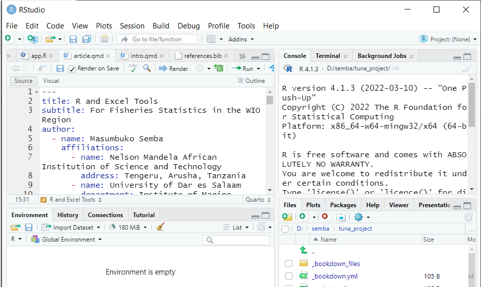
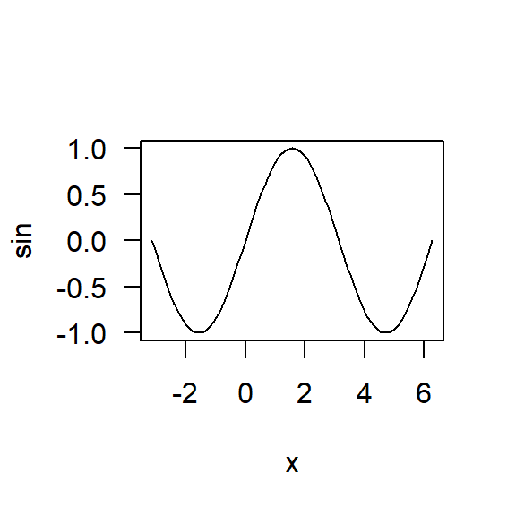

![]()

R, Rstudio
What you will learn in this post
- The R program
- Why learn R programming
- Installation of R, Rstudio and R packages
- Introduction to Rmarkdown
- Loading packages in R
The R program
R is a language and package-based software environment that provides a wide variety of functions for statistical computing and graphics. It is available free at the Comprehensive R Archive Network (CRAN) on the Internet. It is also open source and available for all major operating systems. Because R is a programming language it can seem a bit daunting; you have to type in commands to get it to work; however, it does have a Graphical User Interface (GUI) to make things easier and it is not so different from typing formula into Excel. R cope with a huge variety of analyses and someone have written a routine to perform nearly any type of calculation. R comes with a powerful set of routines built in at the start but there are some useful extra packages available on the CRAN website. These include routines for more specialized analyses covering many aspects of scientific research as well as other fields (e.g. economics). There are many advantages in using R:
- It is free, always a consideration.
- It is open source; this means that many bugs are ironed out. It is extremely powerful and will handle very complex analyses as easily as simple ones.
- It handle a wide variety of analyses. This is one of the most important features: you only need to know how to use R and you can do more or less any type of analysis; there is no need to learn several different (and expensive) programs.
- It uses simple text commands. At first this seems hard but it is actually quite easy. The upshot is that you can build up a library of commands and copy/paste them when you need them.
- Documentation. There is a wealth of help for R. The CRAN site itself hosts a lot of material but there are also other websites that provide examples and documentation. Simply adding CRAN to a web search command will bring up plenty of options.
Why R?
R provides a wide variety of statistical (linear and nonlinear modelling, classical statistical tests, time-series analysis, classification, clustering, …) and graphical techniques, and is highly extensible. The R language serves as a vehicle of choice for research in statistical methodology, and an Open Source route to participation in that activity. One of R’s strengths is the ease with which well-designed publication-quality plots can be produced, including mathematical symbols and formulae where needed. R is also available as Free Software under the terms of the Free Software Foundation’s GNU General Public License in source code form. It compiles and runs on a wide variety of UNIX platforms and similar systems (including FreeBSD and Linux), Windows and MacOS.
Tip
Many users think of R as a statistics system and forget that it as an environment within which statistical techniques are implemented.
Install R
A new major version of R comes out once a year, and there are 2-3 minor releases each year. It’s a good idea to update regularly. Upgrading can be a bit of a hassle, especially for major versions, which require you to re-install all your packages, but putting it off only makes it worse. Getting R is easy via the Internet. The R Project website is a vast enterprise and has local mirror sites in many countries.
- The first step is to go to https://cran.r-project.org/. The project’s website is the main official information source and can be reached from ?@fig-rproject.
Click Download R for Mac/Windows. Once you have clicked the download link ((cran?)), you have the chance to select a mirror site. These mirrors sites are hosted in servers across the world and using a local one will generally result in a speedier download.
Click the link appropriate for your system (Linux, Mac, Windows). Once you have selected a mirror site, you can click the link that relates to your operating system ((Rdownload?)). If you use a Mac then you will go to a page where you can select the best option for you (there are versions for various flavours of OSX). If you use Windows then you will go to a Windows-specific page. If you are a Linux user then read the documentation; you generally install R through the terminal rather than via the web page.

- Now the final step is to click the link and download the installer file, which will download in the usual manner according to the setup of your computer.
Once you have downloaded the install file, you need to run it to get R onto your computer. If you use a Mac you need to double-click the disk image file to mount the virtual disk. Then double-click the package file to install. If you use Windows, then you need to find the EXE file and run it. The installer will copy the relevant files and you will soon be ready to run R.
What happens at R startup
Now R is ready to work for you. Launch R using the regular methods specific to your operating system. If you added a desktop icon or a quick launch button then you can use these or run R from the Applications or Windows Start button.
R is mainly used as an interactive program — you give R a command and it responds to that command. The result may influence the next command that you give R. Between the time you start R and it gives you the first prompt, any number of things might happen (depending on your installation). But the thing that always happens is that some number of packages are attached to the search list. You can see what those packages are in your case with the command:
Tip
You don’t type the “>” — that is the R prompt, but you do hit the return key at the end of the line
The first item on the search list is the “global environment”. This is your work space where the objects that you create during the R session will be.
You quit R with the command:
R will ask you if you want to save or delete the global environment when you quit. If you do save the global environment, then you can start another R session with those objects in the global environment at the start of the new session. You are saving the objects in the global environment, you are not saving the session. In particular, you are not saving the search list.
Installing RStudio
RStudio is an integrated development environment (IDE) for R programming (rstudio?). RStudio is a set of integrated tools that allows for a more user-friendly experience for using R. Although you will likely use RStudio as your main console and editor, you must first install R, as RStudio uses R behind the scenes. Similar to R, RStudio is freely-available, cross-platform, and open-source.
Download and install it from http://www.rstudio.com/download. RStudio is updated a couple of times a year. When a new version is available, RStudio will let you know. It’s a good idea to upgrade regularly so you can take advantage of the latest and greatest features.
- Go to https://www.rstudio.com/products/rstudio/download/
- Click Download under RStudio Desktop.
- Click the link appropriate for your system (Linux, Mac, Windows)
- Follow the instructions of the Installer.
Rstudio Layout
Whenever we want to work with R, we’ll open RStudio. RStudio interfaces directly with R, and is an Integrated Development Environment (IDE). This means that RStudio comes with built-in features that make using R a little easier. When you start RStudio, you’ll see four key panels in the interface shown in Figure 1. We’ll refer to these four “panes” as the editor, the Console, the Environment, and the Files panes. The large square on the left is the Console pane, the square in the top right is the Environment pane, and the square in the bottom right is the Files pane. As you work with R more, you’ll find yourself using the tabs within each of the panes.
When we create a new file, such as an R script, an R Markdown file, or a Shiny app, RStudio will open a fourth pane, known as the source or editor pane. The source pane should show up as a square in the top left. We can open up an .R script in the source pane by going to File, selecting New File, and then selecting R Script:

We are going to have our first experience with R through RMarkdown, so let’s do the following.
R functions
Like Excel, the power of R comes not from doing small operations individually (like 8*22.3), but rather R’s power comes from being able to operate on whole suites of numbers and datasets (R Core Team, 2023). And also like Excel, some of the biggest power in R is that there are built-in functions that you can use in your analyses (and, as we’ll see, R users can easily create and share functions, and it is this open source developer and contributor community that makes R so awesome).
R has a mind-blowing collection of built-in functions that are used with the same syntax: function name with parentheses around what the function needs to do what it is supposed to do. We’ve seen a few functions already: we’ve seen plot() and summary().
Functions always have the same structure: a name, parentheses, and arguments that you can specify. function_name(arguments). When we talk about function names, we use the convention function_name() (the name with empty parentheses), but in practice, we usually supply arguments to the function function_name(arguments) so that it works on some data. Let’s see a few more function examples.
Like in Excel, there is a function called “sum” to calculate a total. In R, it is spelled lowercase: sum(). (As I type in the Console, R will provide suggestions). Let’s use the sum() function to calculate the sum of all the distances traveled in the cars dataset. We specify a single column of a dataset using the $ operator:
sum(cars$dist)Another function is simply called c(); which combines values together.
So let’s create a new R code chunk. And we’ll write:
Note
some functions don’t require arguments: try typing date() into the Console.
Be sure to type the parentheses (
date()); otherwise R will return the code behind thedate()function rather than the output that you want/expect.
So you can see that this combines these values all into the same place, which is called a vector here. We could also do this with a non-numeric examples, which are called “strings”:
We need to put quotes around non-numeric values so that R does not interpret them as an object. It would definitely get grumpy and give us an error that it did not have an object by these names. And you see that R also prints in quotes. We can also put functions inside of other functions.This is called nested functions. When we add another function inside a function, R will evaluate them from the inside-out.
So R first evaluated the sum(cars$dist), and then evaluates the c() statement. This example demonstrates another key idea in R: the idea of classes. The output R provides is called a vector, and everything within that vector has to be the same type of thing: we can’t have both numbers and words inside. So here R is able to first calculate sum(cars$dist) as a number, but then c() will turn that number into a text, called a “string” in R: you see that it is in quotes. It is no longer a numeric, it is a string.
This is a big difference between R and Excel, since Excel allows you to have a mix of text and numeric in the same column or row. R’s way can feel restrictive, but it is also more predictable. In Excel, you might have a single number in your whole sheet that Excel is silently interpreting as text so it is causing errors in the analyses. In R, the whole column will be the same type. This can still cause trouble, but that is where the good practices that we are learning together can help minimize that kind of trouble.
Packages
So far we’ve been using a couple functions that are included with R out-of-the-box such as plot() and c(). We say that these functions are from “Base R”. But, one of the amazing things about R is its users’ community that create new functions and packages. An R package is a collection of functions, data, and documentation that extends the capabilities of base R. Using packages is key to the successful use of R. The majority of the packages that you will learn in this manual are part of the so-called tidyverse, which is an ecosystem of packages that share a common philosophy of data and R programming, and are designed to work together naturally.
The tidyverse is a coherent system of packages for data manipulation, exploration and visualization that share a common design philosophy. The Tidyverse (Wickham and Wickham, 2017) packages form a core set of functions that will allow us to perform most any type of data cleaning or analysis we will need to do. We will use the following packages from the tidyverse
- ggplot2—for data visualisation.
- dplyr—for data manipulation.
- tidyr—for data tidying.
- readr—for data import.
- purrr—for functional programming.
- tibble—for tibbles, a modern re-imagining of data frames.
Installing R packages
For us to use tidyverse and any other package that is not included in Base R, we must install them first. The easiest way to install packages is to use the install.packages() command. For example, let’s go ahead and install the tidyverse package on your machine:
On your own computer, type that line of code in the console, and then press enter to run it. R will download the packages from CRAN and install it to your computer. If you have problems installing, make sure that you are connected to the internet, and that https://cloud.r-project.org/ isn’t blocked by your firewall or proxy.
Loading installed packages
Now we’ve installed the package, but we need to tell R that we are going to use some functions within the tidyverse package. With exception to base R package, add on package that are installed must be called with either library or require functions to make their tools accessible in R session. Let’s us load the tidyverse package we just installed
You notice that when we load tidyverse, it popup a notification message showing the loaded packages and the conflicts they bring in. These conflicts happen when packages have functions with the same names as other functions. This is OK when you prefer the function in a package like tidyverse rather than some other function. Basically the last package loaded in will mask over other functions if they have common names.
Other packages
There are many other excellent packages that are not part of the tidyverse, because they solve problems in a different domain, or are designed with a different set of underlying principles. This doesn’t make them better or worse, just different. In other words, the complement to the tidyverse is not the messyverse, but many other universes of interrelated packages (r4ds?). As you tackle more data science projects with R, you’ll learn new packages and new ways of thinking about data. In this course we’ll use several data packages from outside the tidyverse:
Useful R commands
Show version number of R and installed OS
show R version
show current working directory
change working directory to a user defined location
list all packages in the R package library
open download mirrors list for package installation
download R packages from CRAN repository to a local folder
update all packages
show version numbers of R packages, dependencies of packages, recommended packages, license info and builded R version number
parses and returns the description file of a package
remove packages
show license info
display citation
load packagesinto the session
running time of R
current memory usage
total available memory
terminate an R session
display warning messages
Getting help for R
Both online and offline help documentations and manuals for R are available. You can start help while using R with help.start() function from the console. For more help, you can use online documentations from the official R website by using these links: + Help page: https://www.r-project.org/help.html + Manuals page: https://cran.r-project.org/manuals.html + Frequently Asked Questions (FAQs) Page: https://cran.r-project.org/faqs.html
Every function available to you should have a help page, and you access it by typing a question mark preceding the function name in the Console. Let’s have a deeper look at the arguments for plot(), using the help pages.
This opens up the correct page in the Help Tab in the bottom-right of the RStudio IDE. You can also click on the tab and type in the function name in the search bar.
All help pages will have the same format, here is how I look at it:
The help page tells the name of the package in the top left, and broken down into sections:
Help pages
- Description: An extended description of what the function does. - Usage: The arguments of the function and their default values. - Arguments: An explanation of the data each argument is expecting. - Details: Any important details to be aware of. - Value: The data the function returns. - See Also: Any related functions you might find useful. - Examples: Some examples for how to use the function.
When I look at a help page, I start with the Description to see if I am in the right place for what I need to do. Reading the description for plot lets me know that yup, this is the function I want.
I next look at the usage and arguments, which give me a more concrete view into what the function does. plot requires arguments for x and y. But we passed only one argument to plot(): we passed the cars dataset (plot(cars)). R is able to understand that it should use the two columns in that dataset as x and y, and it does so based on order: the first column “speed” becomes x and the second column “dist” becomes y. The ... means that there are many other arguments we can pass to plot(), which we should expect: I think we can all agree that it would be nice to have the option of making this figure a little more beautiful and compelling. Glancing at some of the arguments, we can understand here to be about the style of the plots.
Next, I usually scroll down to the bottom to the examples. This is where I can actually see how the function is used, and I can also paste those examples into the Console to see their output. Let’s try it:

Flavours of R: base and tidyverse
R is a programming language, and just like any language, it has different dialects. When you read about R online, you’ll frequently see people mentioning the words “base” and “tidyverse.” These are the two most common dialects of R. Base R is just that, R in its purest form. The tidyverse is a collection of add-on packages for working with different types of data. The two are fully compatible, and you can mix and match as much as you like. Both ggplot2 (Wickham, 2016) and magrittr (Bache and Wickham, 2014) are part of the tidyverse (Wickham and Wickham, 2017).
In recent years, the tidyverse has been heavily promoted as being “modern” R which “makes data science faster, easier and more fun.” You should believe the hype. The tidyverse is marvellous. But if you only learn tidyverse R, you will miss out on much of what R has to offer. Base R is just as marvellous, and can definitely make data science as fast, easy and fun as the tidyverse. Besides, nobody uses just base R anyway - there are a ton of non-tidyverse packages that extend and enrich R in exciting new ways. Perhaps “extended R” would be better names for the non-tidyverse dialect.
Anyone who tells you to just learn one of these dialects is wrong. Both are great, they work extremely well together, and they are similar enough that you shouldn’t limit yourself to just mastering one of them. This book will show you both base R and tidyverse solutions to problems, so that you can decide for yourself which is faster, easier, and more fun.
A defining property of the tidyverse is that there are separate functions for everything, which is perfect for code that relies on pipes. In contrast, base R uses fewer functions, but with more parameters, to perform the same tasks. If you use tidyverse solutions there is a good chance that there exists a function which performs exactly the task you’re going to do with its default settings. This is great (once again, especially if you want to use pipes), but it means that there are many more functions to master for tidyverse users, whereas you can make do with much fewer in base R. You will spend more time looking up function arguments when working with base R (which fortunately is fairly straightforward using the ? documentation), but on the other hand, looking up arguments for a function that you know the name of is easier than finding a function that does something very specific that you don’t know the name of. There are advantages and disadvantages to both approaches.
References
Bache, S.M., Wickham, H., 2014. Magrittr: A forward-pipe operator for r.
R Core Team, 2023. R: A language and environment for statistical computing. R Foundation for Statistical Computing, Vienna, Austria.
Wickham, H., 2016. ggplot2: Elegant graphics for data analysis. Springer-Verlag New York.
Wickham, H., Wickham, M.H., 2017. Tidyverse: Easily install and load the ’tidyverse’.
Citation
BibTeX citation:
@online{semba2024,
author = {Semba, Masumbuko},
title = {The Basics of {R} and {Rstudio}},
date = {2024-01-24},
url = {https://lugoga.github.io/kitaa/posts/thebasics/},
langid = {en}
}
For attribution, please cite this work as:
Semba, M., 2024. The basics of R and Rstudio [WWW Document]. URL https://lugoga.github.io/kitaa/posts/thebasics/